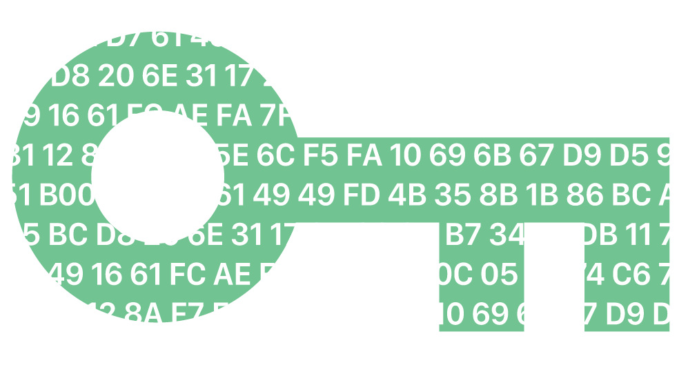

About Me
I'm a highly driven software engineer with a passion for continual growth and development. As a graduate of the University of California, Berkeley with a B.A. in Computer Science, I have a diverse range of interests, including cryptography, computer graphics, UI/UX design, databases and operating systems.
My technical skills are equally diverse, spanning languages such as Python, Java, C, C++, Golang, as well as
front-end and back-end web development using HTML/CSS/JavaScript. In addition, I'm a strong communicator and
team player with a knack for critical thinking, adaptability, accountability, and empathy.
When I'm not coding, I enjoy expressing my creativity as an artist, challenging myself as a long-distance runner, and keeping my mind sharp by reading diverse online opinions.
Feel free to contact me at
pqcalvin@gmail.com
, or through
LinkedIn
.
Projects

Fluid Dynamics Particle Simulator
- This is a sophisticated CGI water simulation program that utilizes C and Blender. The water physics are derived from extensive research on fluid dynamics research papers, enabling it to closely mimic the movement of water in real-life scenarios.
- I had the opportunity to develop the graphics rendering algorithm. This algorithm generates a visually pleasing 3D mesh from the particle calculations, which is later used to create stunning animations, much like the one you can see here.
- By implementing multi-threading and hashing techniques, we were able to achieve fast and efficient computation of the interactions between hundreds of thousands of particles. In addition to the speedy particle interaction calculations, the graphics rendering process was also optimized to ensure swift and seamless generation of visual output.

Cryptographic File Sharing System
- This is a multi-user, safe and secure file sharing and storage system that utilizes many cryptographic tools including public and private key encryption, HMAC, AES-CTR block chaining, SHA-512 hashing, and symmetric encryption.
- This file storage systems allows users the ability to add, append, share, and revoke files. To ensure the confidentiality, integrity, and authenticity of user data and files, we employ a transient data design philosophy. This approach helps us maintain the security and privacy of our users' information.
Pintos Operating System
- I have had the opportunity to design and implement several enhancements to a barebones operating system. These improvements included implementing user program parsing and execution, system calls, and thread concurrency management.
- I created and integrated two key functionalities into the operating system. I implemented a recursive priority donation algorithm to allow multiple threads to concurrently utilize locks, semaphores, and condition variables for atomic actions, resulting in increased efficiency and performance. Additionally, I designed a least recently used buffer cache for the i-node based file system, which significantly improved the system's runtime speed.

Gitlet
- This is a fully functional local file version control system that closely emulates some of Git's main features such as branching, committing, checking out, logging, resetting, and merging.
- In order to manage the complexity of these features, I utilized object-oriented programming techniques and implemented serialization and deserialization functionalities. It was an exciting challenge to create a system that could manage multiple versions of files and folders.
- This project was truly a turning point for me, as it required me to cultivate good coding habits and hone my design skills. Through the process of creating this project, I gained a profound appreciation for the importance of careful planning and meticulous attention to detail.
RookieDB
- I designed and developed enhancements to a barebones database that boasts many diverse and sophisticated functionalities. Among these are B+ tree indices that facilitate rapid database storage access, optimized join algorithms, query optimizations, a complex multi-granularity locking system that enables seamless concurrent execution of transactions, and database recovery through logging.
- One of the most challenging aspects of this project was the implementation of a robust multi-granularity locking system. To ensure the integrity and consistency of the database, I utilized a variety of lock types to allow for atomic actions. In addition, I incorporated a sophisticated wait queue mechanism that enabled multiple transactions to request access to locked resources while maintaining database concurrency.
Go Motivation
- My team and I built a full-stack web application that provides users with a motivating platform to achieve their long-term fitness goals. One of the key features of our application is a user-friendly calendar and achievement system that makes tracking progress seamless and enjoyable. To power our application, we integrated a calendar API and an information storage API, which allows us to store and retrieve data with ease and speed.
- We employed a comprehensive approach to user interface design, incorporating A/B testing, persona development, and wireframing techniques to construct the app from scratch, with a focus on iterative improvements and targeting a specific user group.

Integer Linear Program Room Optimizer
- This challenging project required my team and I to tackle a NP-complete search problem, which involved finding the most optimal sets of people and rooms while satisfying certain conditions. In essence, we needed to generate the ideal set of vertex groupings that maximized the sum total edge values, while ensuring that the total graph traversal edge values did not exceed a predetermined upper bound threshold.
- Using integer linear programming, we developed an algorithm to find the most optimal set of vertex groupings out of hundreds of sets containing 100 different vertices each. As a result of our innovative approach, we achieved 10th place out of 243 groups in a contest that measured the ability of solvers to process a maximum number of inputs within a given time limit.